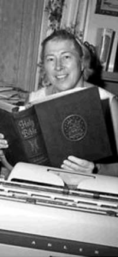
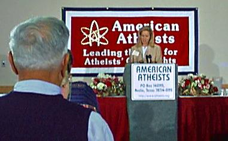
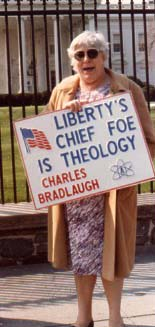
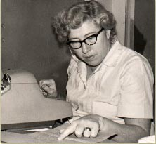
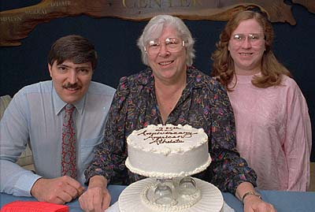
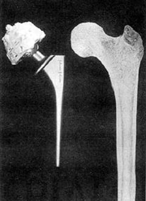
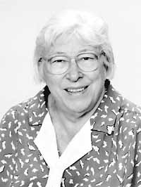

|
Madalyn Murray O'HairAccording to the 1964 issue of Life magazine, Madalyn Murray-O'Hair was at one time the most hated woman in America. She sued the Baltimore school district in an attempt to subtract the word "God" from the Pledge of Allegiance. Her case, Murray v. Curlet reached the U.S. Supreme Court in 1963, leading to a landmark legal victory: the abolition of prayer, Bible readings, and all religious references from the American public school system. Throughout her life, O'Hair worked tirelessly to obliterate the concept of God and everything pertaining to Christianity. She founded of a nonprofit group dedicated to the separation of church and state: the American Atheist Organization, which advocated (among other things) free birth control and the taxing of churches. She wrote numerous articles, including a Hustler magazine piece on the benefits of Masturbation. Long before Larry Flynt was offering cash for information regarding the sexual peccadilloes of United States congressmen, he was a friend and confidant of Madalyn, and his name appears several times in her diaries. O'Hair was tough, an angry you'd-think-she's-a-dyke-but-she's-just-a-loudmouth kinda broad. A force to be reckoned with, she once yelled at a woman during a PBS talk show for promising to include O'Hair in her prayers that evening. O'Hair enjoyed hating "stupid people," and she wrote of her passion for contempt: "What's the matter with hating? It's treated as a leper among the emotions. Why in the hell should we go on exuding sweetness and light? There is no God. There's no heaven. There's no hell. There are no angels. When you die, you go in the ground, the worms eat you." These views made her "controversial" enough to be Phil Donahue's very first guest. She delighted in insulting Christians, regarding nuns as "poor old dried-up women lying there on their solitary pallets yearning for Christ to come to them in a vision some night and take their maidenheads. By the time they realize he's not coming, it's no longer a maidenhead; it's a poor, sorry tent that nobody would be able to pierce -- even Jesus with his wooden staff. It's such a waste." Her magazine, also titled American Atheist, was proud to interview the likes of Hitchhiker's Guide author Douglas Adams, and other professed radical atheists. Unfortunately for O'Hair, on Mother's Day 1980, her oldest son William came flouncing out of the closet. He revealed to the world not only that he believed in God, but that he himself was a diehard, evangelical, salary tithing, gospel singing bible-thumping Christian Baptist. He felt that when he stood there with his mother on the Supreme Court steps, he was being used as a prop in his mother's boring crusade. O'Hair disowned him immediately. "One could call this a postnatal abortion on the part of a mother, I guess; I repudiate him entirely and completely for now and all times. He is beyond human forgiveness." When George Bush Esq. was campaigning for the presidency in August of 1987,
one of his stops was in Chicago, where he held a formal outdoor news conference.
Robert I. Sherman -- a reporter for the American Atheist news journal,
fully accredited by the state of Illinois and by invitation a participating
member of the press corps covering the national candidates -- was in attendance.
His son, age seven, had been physically and psychologically brutalized at his
school for refusing to pledge to a "nation under God." After Bush won the election, American Atheists asked that he consider being sworn into office with his hand resting reverently upon the Constitution instead of the Holy Bible, and also asked him to retract his statement from August of 1987. Bush had one of his administrative assistants write back: "As you are aware, the President is a religious man who neither supports atheism nor believes that atheism should be unnecessarily encouraged or supported by the government." On January 9, 1990 while signing a proclamation for the Martin Luther King holiday, Bush remarked that the "bigots must be brought to justice." Again, American Atheists threw his words back in his face, asking Bush if he felt that atheists were bigots unworthy of American citizenship. The crisp, White House stationery replied that the official Bush position on atheism had already been adequately expressed in previous correspondence. In November 1993, the O'Hair family went to San Diego, California to respond to an inconsequential harassment suit filed against the American Atheist organizations. They were always being accused of some manner of trouble-stirring or civil disobedience, so this trail was nothing out of the ordinary. But while the family was away, someone or something stole the AA computer system: a 486 tower. The bandit simply walked right on out with it! Also missing was the printer, a battery backup system, a keyboard, a mouse -- and records containing a complete listing of all the holdings of the American Atheist library and archives. Total physical cost: $4,000. Police determined it was an inside job. Madalyn was exceptionally angry at this theft. Over a decade earlier, when Larry Flynt was sent to prison for contempt of court in a case involving the drug arrest of failed automaker John DeLorean, Madalyn convinced Flynt to sign a power-of-attorney giving her control over all his assets, including Hustler magazine. Fortunately or unfortunately for masturbators, O'Hair's gambit was thwarted by Flynt's brother Jimmy. On March 16, 1984, O'Hair wrote in her diary: "I can't believe the perfidy over the Larry Flynt deal. The whole gawd-dam world is made up of liars, cheats [and] swindlers whose single driving force is greed. Everyone sells out. Everyone can be bought." For readers without a dictionary, perfidy is an act of deliberate betrayal, the act of violating faith or allegiance. Two weeks later, the office manager in charge exhibited further perfidy by turning in his two-week notice and quitting. It was decided that another employee, David R. Waters, would assume the vacant position. He'd been with American Atheists since 1993 -- one of the original typesetters in the printing department in fact, and many considered him steady and reliable. They checked his references, his education, and employment record. Unfortunately, the promotion of Waters was the first domino to fall in a gruesome cascade of triple kidnapping, theft, torture, urination in the face, extortion, beatings, dismemberment, and four really gross murders. January 1, 1994. Waters maneuvered himself into position at the American Atheist Global Headquarters. His desk was located a few feet away from the AA safe containing only money and currency which lacked the motto In God We Trust. This was Madalyn's idea of a joke. The safe housed a dozen bearer bonds. Less than a week after Waters took his first sip of Monday morning office coffee -- all twelve $5,000 bonds disappeared. Madalyn was shocked. Actually, horrified would be a better word. First one theft, and now this. The bonds, all government issue, were paying from 10 to 13 percent and had a total face value of $70,000. It was a significant, uninsured loss which could devastate the whole atheist operation. The O'Hairs were freaked out. They were mighty pissed off, and everyone started pointing fingers and shouting like what's-his-name and the other guy from Glengarry Glen Ross. The Austin police department swooped in and -- once again -- were able to determine immediately that the robbery was most likely an inside job. Suspicion quickly fell to Waters, but he steadfastly denied "stealing" anything. This added substantial fuel to Madalyn's fury, but she allowed him to continue running the office while she and her family returned to Los Angeles to resume dealing with the harassment trial. When they came back to the American Atheist Global Headquarters, they discovered
that recent time cards hadn't been punched. The office postage meter had a suspiciously
old date, and none of the AA employees had come to work in David Waters had quit without telling anyone. He left an answering machine message announcing he was leaving, as he "could no longer tolerate the mystique of the organization". It turns out that Waters had laid off all the AA employees so that he -- and he alone -- could gain access to the office assets and the safe. The American Atheist GHQ was left flat broke with zero money in the bank. An investigation revealed the name of David Waters typed on every stolen check, and phone calls traced by MCI revealed a trail of interstate communications, making the crime a federal offense. David Waters was going down. But Waters had an excellent attorney who encouraged him to plead guilty to a single count of theft. In true Texas style, the hardships endured by atheists like Madalyn -- the most hated woman in America -- went largely ignored. Waters was sentenced to ten years' probation with full restitution and deferred adjudication. In short, he paid no fine, spent no time in prison, and was for all intents and purposes a free man who never paid back the money. But nobody scams Madalyn Murray O'Hair and gets away with it. This was an impossibly difficult slap in the face to Madalyn, who unleashed the full force of her disdain for Waters in a now-famous six page essay for the July 1995 issue of the American Atheist newsletter. In this missive, she revealed everything her private investigation had uncovered about Waters, including his priors. It was an angry, hateful rant which described in embarrassing detail his life-long love affair with criminal activities and prison sentences. Drunk and disorderly conduct, burglary, curfew violations, the works. Striking and beating a sixteen year old boy with a hedge post and leaving him in a ditch for dead -- even battery against his own mother, including the beating of her with a broom handle, breaking wall plaques over her head, cursing, urinating in her face, and demolishing her apartment. Madalyn tittered with glee at her poisoned-pen nationwide "expose" of Waters, who was still actively trying to conduct business in the community. The war had escalated even further, and now Waters felt entitled to seek revenge. Sensing this, Madalyn installed a seven-foot chain link fence topped with cyclone barbed wire around the building. The world was officially a hostile environment. She'd been persecuted for thirty-five years just for not believing in God. She felt at war with just about everyone, and she often talked about getting away from it all. Leaving town. Disappearing. On August 28, 1995, American Atheist employee David Travis arrived for work bright and early at the global headquarters and discovered the front door padlocked shut. A posted note read, "The Murray-O'Hair family has been called out of town on an emergency basis. We do not know how long we will be gone at the time of the writing of this memo." This truly puzzled Travis, who started opening the mail. He discovered a statement from a bank in New Zealand he'd never heard of, detailing an account in O'Hair's name which contained close to a million dollars. And now the entire O'Hair family was gone: Madalyn, her son Jon Garth Murray (age 40), and her granddaughter Robin, age 30. The American Atheist operation had been entirely in the hands of this trio, who alternated between roles as president, secretary, and treasurer. A quick trip to the O'Hair home only deepened the mystery: breakfast dishes were sitting on the table, Madalyn's diabetes medicine lay unused on the kitchen counter, and three dogs were left behind. Board members finally made contact with Jon Garth Murray on his cell phone, but he refused to provide details. Robin got on the phone to convey her worries about the dogs, but assured the board everything was fine. Jon Garth's last words were "I know you'll do the right thing," and after September 28, 1995, the O'Hairs stopped answering the phone. SE7EN YEARS LATERWith no bodies alive or dead, no murder weapons, and only mild circumstantial evidence, David R. Waters was eventually convicted of contributing to the disappearance of the O'Hairs, and sentenced to 20 years in prison for extortion. Water's ex-girlfriend testified that he was so angry when Madalyn O'Hair wrote her article that he began plotting to pull off her toes with pliers. Waters never faced trial for the kidnapping and murder of the O'Hairs. Instead, with the help of his aforementioned "excellent attorney," as the result of a plea bargain, he stunned case followers by revealing what happened to the O'Hairs, and disclosed the location of the O'Hair bodies. Waters and two accomplices, Gary Karr and Danny Fry, had kidnapped the family at gunpoint, straight from their home in broad daylight. They were held captive in a hotel at the Warren Inn Apartments in faraway San Antonio for nearly a month, where Jon Garth's cooperation was extorted by threats to his mother. Jon was forced to drain funds from the American Atheist accounts into Waters' pockets, and ended up exchanging currencies for $600,000 in gold coins. Unfortunately for Waters, the day after he stashed the coins in a rental facility, they were stolen by two teenagers. From here, there was nowhere to go but murder and concealment. Karr did the dirty work of cutting the O'Hairs into pieces small enough to conceal in 55-gallon metal drums. Texas investigators positively identified the remains as those of Madalyn Murray O'Hair, Jon Garth Murray, and Robin Murray O'Hair. Jon and Robin had been suffocated with plastic bags. Madalyn had been subjected to severe blunt-force trauma. Riddled with ligature marks, her body was found burned and dismembered at mid-thigh level -- but the serial number on her artificial hip remained intact. The severed head and hands of a fourth person were also discovered: the remains of Danny Fry, whose headless and handless corpse was found in 1995 on a Dallas County river bank. Fry was an assistant of Waters during the kidnapping, but he too was killed and dismembered over fears that he couldn't keep his mouth shut. Waters died of lung cancer in January of 2003 in a federal prison hospital in North Carolina. Earlier in her life, O'Hair wrote an essay for American Atheist about her hopes that nothing "special" would ever happen to her body. She didn't want any "dirty Christers" getting their hands on her corpse. She advised that her "carcass should be flung into the water, where the fish could feed on it." A dead body, she wrote, was nothing more than a fallen leaf from a tree, a dog killed on the highway, or a fish caught in a net. Her estranged son William, still a practicing Baptist, interred Madalyn, Jon, and Robin into a common vault with an unmarked grave, with no religious fanfare. Atheist journalist Thom Freelander found himself ruminating about the O'Hair case while on Flight 34 from Los Angeles to JFK International Airport in New York. On the flight, an American Airlines pilot who'd recently been on a mission trip spoke into the loudspeaker. He asked the Christian passengers on board to please raise their hands and identify themselves to the non-Christians, so everyone could break up into individual discussion groups and discuss the relative merits of Christianity. "If you're not Christian, you're crazy," the captain was quoted as saying. His religious fervor and proselytizing immediately scared captive passengers, who drank heavily during the trip and complained to flight attendants. |
 several
weeks. The answering machine was full of old messages. Bills hadn't been paid,
no book orders had been filled, and entire sheets of checks were missing.
several
weeks. The answering machine was full of old messages. Bills hadn't been paid,
no book orders had been filled, and entire sheets of checks were missing.